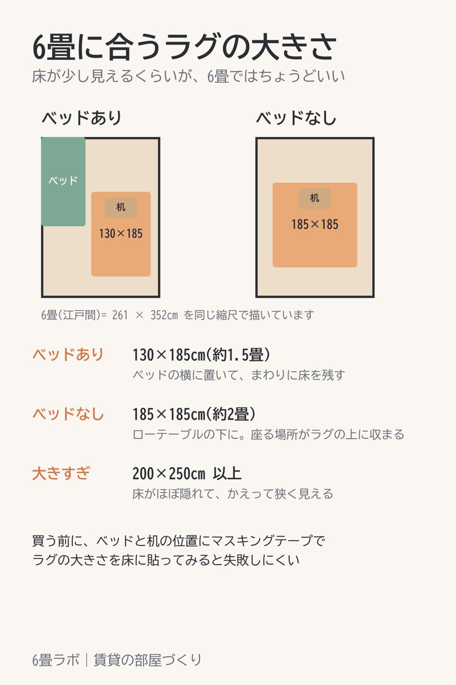

このページには楽天アフィリエイトのリンク(【PR】)が含まれています。

ラグを選ぶとき、色や素材より先に決めておきたいのが大きさです。大きさが決まれば、あとは色と毛足を比べるだけになります。
6畳の床をほとんど覆うような大きいラグにすると、かえって部屋が狭く見えます。ラグの周りに床が少し見えているくらいが、部屋の広さが伝わりやすいです。
測るときは、ベッドや机の脚がラグに乗るかどうかも見ておくと、置いてからのずれが減ります。
一人暮らしの部屋はラグの上で過ごす時間が長く、汚れやすいです。洗濯機で洗えるか、ホットカーペットの上に敷けるかを先に条件に入れておくと、長く使えるものを選びやすくなります。
【PR】図の大きさ(130×185cm・185×185cm)があり、洗えるラグ楽天で見る →